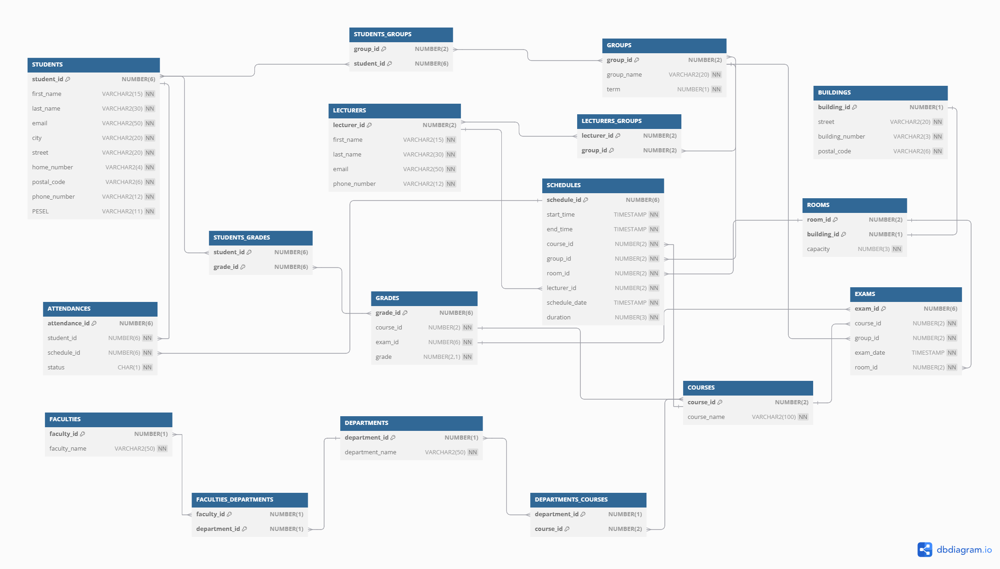
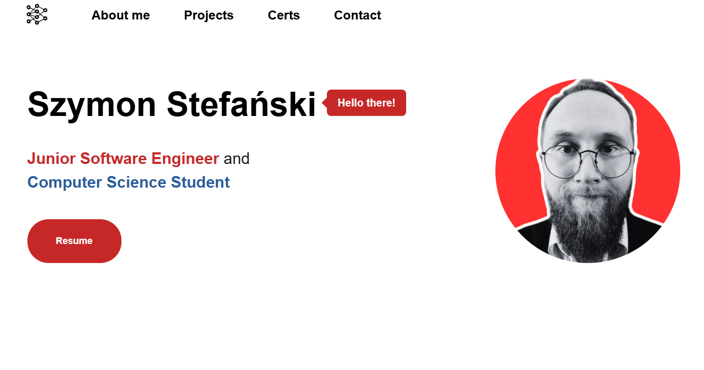

About me
Nice too meet you! My name is Szymon and I'm from Poland. I'm 3rd year student of a Computer Science at the Polish-Japanese Academy of Information Technology. I am a naturally friendly person who can talk about everything and nothing. I'm interested in programming, databases and AI. I am currently seeking an internship or junior position to apply my knowledge in a professional setting and continue growing as a software engineer.
I have over four and half years of experience as a Customer Advisor at Castorama. I provided customer service and product recommendations, ensuring a high level of client satisfaction. I collaborated with team members to optimize store operations and inventory management, while also assisting in maintaining stock levels using SAP and database systems to ensure accurate tracking and reporting. This role allowed me to develop strong problem-solving, communication, and teamwork skills, which I now apply in technical projects.
Projects
University Database Project
This project involves the design and implementation of a
database system for managing university operations using Oracle
Database and PL/SQL. The database tracks essential university
data, including students, courses, exams, grades, and student
groups. It features multiple views to analyze student
performance, course pass rates, and exam attempts, along with
ensuring data integrity through constraints and relational keys.

My personal webpage
This is my personal webpage - used to show my person, skills and
projects. I used HTML, CSS and JavaScript to create this
webpage.

Certs

An Oracle Database SQL Certified Associate demonstrates understanding of fundamental SQL concepts needed to undertake any database project. Candidates have illustrated a depth of knowledge of SQL and its use when working with the Oracle Database server, and a working knowledge of queries, insert, update and delete SQL statements as well as some Data Definition language and Data Control Language, the optimizer, tables and indexes, data modeling and normalization.

The Oracle Cloud Infrastructure (OCI) Foundations certification is for individuals who intend to demonstrate fundamental knowledge of public cloud services provided by Oracle Cloud Infrastructure (OCI). This certification is for candidates with non-technical backgrounds, such as those involved in selling or procuring cloud solutions, as well as those with a technical background who want to validate their foundational-level knowledge around core OCI services.
The CCNA v7 Introduction to Networks (ITN) - The first course in the CCNA (Cisco Certified Network Associate) curriculum introduces the architectures, models, protocols, and networking elements that connect users, devices, applications, and data through the internet and across modern computer networks - including IP addressing and Ethernet fundamentals.

Introduction to concepts and fundamental skills for Linux users who run applications and services in Linux environments, but do not perform Linux system administration. Getting Started with Linux Fundamentals (RH104) is designed for IT professionals and business users who access Linux systems, and run Linux-based applications and services, but have little to no previous UNIX or Linux experience.